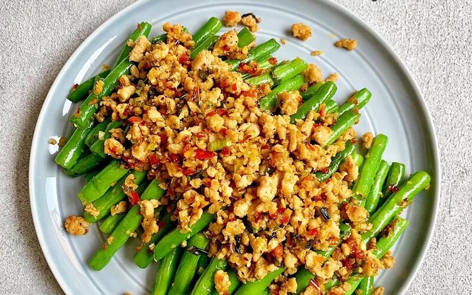

Resep Tumis Buncis
Bahan-bahan:
- 200 gram buncis, potong serong
- 2 siung bawang putih, cincang halus
- 4 butir bawang merah, iris tipis
- 1 buah cabai merah besar, iris serong (opsional)
- 3 buah cabai rawit, iris serong (opsional)
- 1 buah tomat, potong kecil
- 50 gram wortel, iris tipis memanjang (opsional)
- 1 sendok makan saus tiram
- 1 sendok teh kecap manis
- 1/2 sendok teh gula pasir
- Garam dan merica secukupnya
- 100 ml air
- 2 sendok makan minyak untuk menumis
Cara Memasak:
Panaskan minyak di wajan. Tumis bawang putih dan bawang merah hingga harum.
Masukkan cabai merah besar dan cabai rawit. Aduk rata hingga sedikit layu.
Masukkan buncis dan wortel. Tumis sebentar, lalu tambahkan air. Masak hingga setengah matang.
Tambahkan saus tiram, kecap manis, gula pasir, garam, dan merica. Aduk rata dan masak hingga buncis matang namun tetap renyah.
Masukkan potongan tomat di menit terakhir. Aduk sebentar hingga tomat layu.
Angkat tumisan dan sajikan hangat sebagai lauk pendamping nasi.